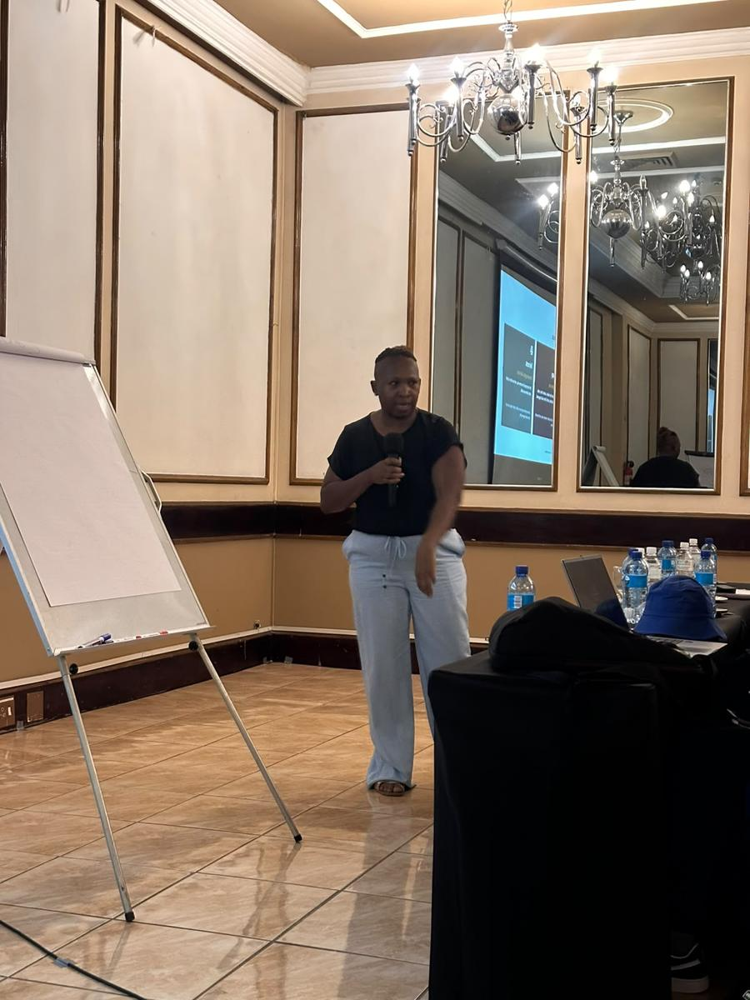
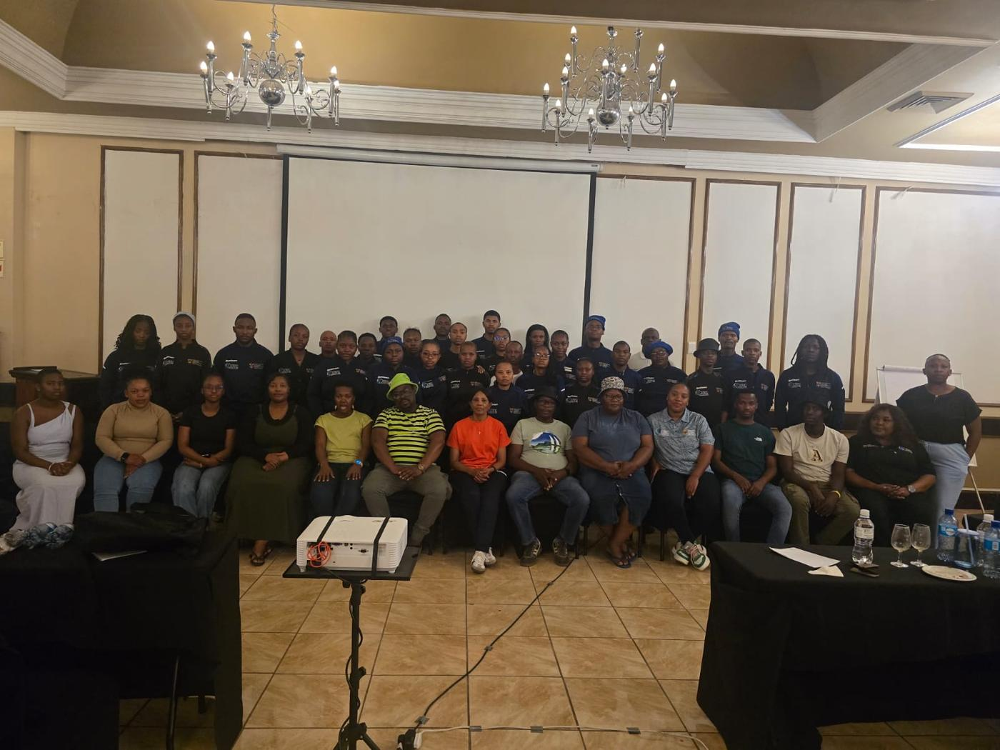
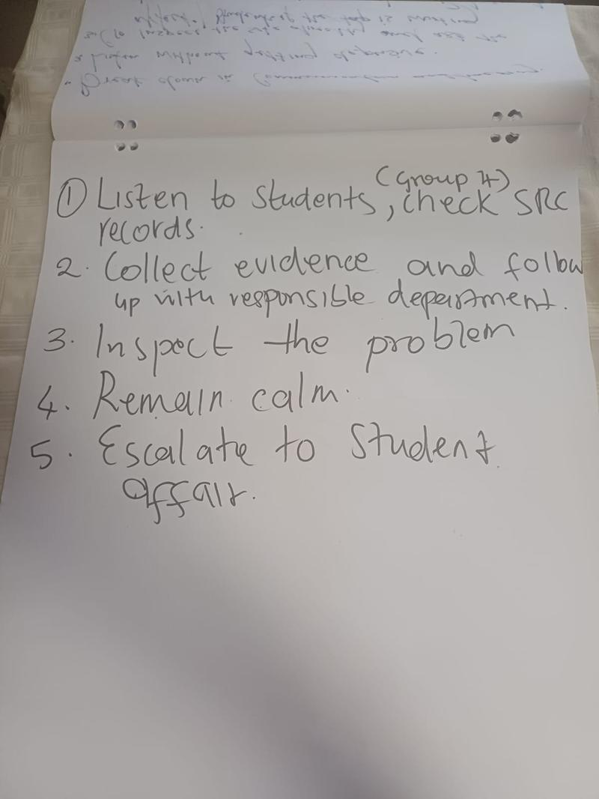
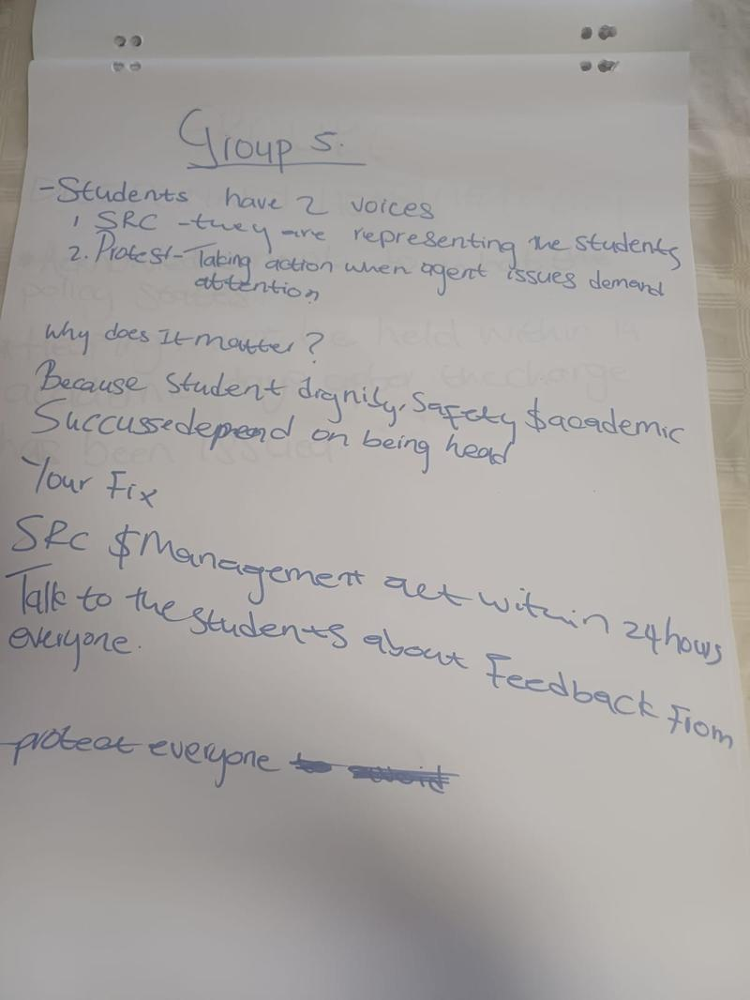

Case study · Youth & campus
Training student leaders to represent every student
Over three days in October 2026 we trained the Student Representative Council (SRC) of Ekurhuleni West TVET College on governance, conflict and their constitution. We then wrote a findings paper for campus management based on the leaders' own self-assessments.



The programme
From the SRC's purpose to its paperwork.
Each session mixed short input with group work. Leaders worked on their real constitution and code of conduct, not textbook examples.
Session 1Foundation
Introduction and foundation
The SRC's role in college governance, human rights and democratic principles, the constitution and elections, and leading with inclusion and accountability.
Session 2People
Conflict management and resolution
Handling disagreements inside the council and between students and staff, before they escalate.
Session 3Rules
Code of conduct: finding loopholes
Reading the code of conduct closely to find the gaps that cause disputes.
Session 4Rules
Constitution review: writing down how things get done
Turning unwritten habits into clear written procedures, and logging gaps in a constitution gap register.
Session 5Rules
Constitution review, part 2: writing a procedure that works
Drafting procedures that hold up in practice: who acts, by when and what gets recorded.
Session 6Practice
Democracy and fairness
Representing every student fairly, including the quiet ones and those who didn't vote for you.
From the room
Leaders wrote their own escalation routes.


“Student dignity, safety and academic success depend on being heard.”
Group 5, flipchart notes
What we found
The values are there. The routines aren't yet.
We reviewed ten self-assessments from five campuses, completed on 8–9 October 2026. The figures describe this group as a snapshot, not every student leader at the college.
Understand why the SRC exists
Every readable sheet said the SRC gives all students a formal voice in decisions that affect them.
Put students' needs first
The rest ranked college rules or their own opinion above what students need and say.
Couldn't name where to take a problem
They wrote “follow the correct procedure” without saying who to approach. Only 30% named real steps, such as a written memo to Student Support Services.
Find getting action the hardest part
Results often depend on management, and leaders described waiting more than following up.
Named students who get overlooked
Shy students, those who live off campus, students with disabilities and first-years. But only 10% described a routine that would reach them reliably.
Committed to a listening step within two weeks
Class visits, listening sessions or anonymous feedback forms. Another 20% planned a service drive, such as NSFAS application help.
Our recommendations
Practical skills, not a change of attitude.
- Give each campus a simple chart of who to approach first, who next and what to put in writing, and let leaders practise it.
- Teach follow-up: track every concern, keep minutes and report back to students regularly, even when progress is slow.
- Pair visible projects, like financial-aid drives, with gathering and documenting student concerns for management.
- Practise using the constitution to solve real student problems, so leaders see it as a tool rather than a barrier.
Training student or staff leaders?
We run the sessions and tell you what we found.
Leadership, governance and financial literacy training for SRCs, student societies, youth structures and staff, with a written report at the end.
Next case studyMSME Manufacturing Programme for NFLA →